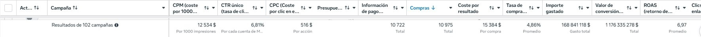
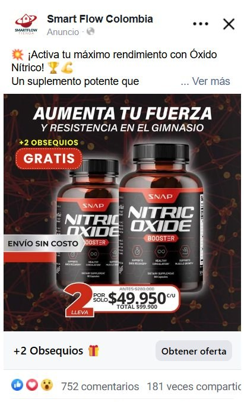
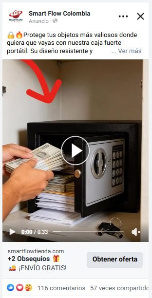

o pulsa una tecla, o scrolleaor press any key, or scrollo prem una tecla, o fes scroll
AI Engineer · sistemas agénticos que se auditan a sí mismos · remotoAI Engineer · agentic systems that audit themselves · remoteAI Engineer · sistemes agèntics que s'auditen a si mateixos · remot
Python · LLMs · agentes · 7 años en ecommercePython · LLMs · agents · 7 years in ecommercePython · LLMs · agents · 7 anys en ecommerce
El modo de fallo real no es que el código pete, es que el sistema afirme algo falso con total fluidez y nadie lo vea. Contra eso: evals que bloquean, grounding contra la fuente y una flota de agentes con el mandato de refutarme. The real failure mode isn't the code crashing, it's the system fluently asserting something false that nobody catches. Against that: evals that block, grounding against the source and a fleet of agents mandated to refute me.El mode de fallada real no és que el codi peti, és que el sistema afirmi una cosa falsa amb tota fluïdesa i ningú ho vegi. Contra això: evals que bloquegen, grounding contra la font i una flota d'agents amb el mandat de refutar-me.
¿Prefieres verlo funcionando? Rather see it running? Ho vols veure en marxa? Abre la demo viva de SEKURAOpen the live SEKURA demoObre la demo viva de SEKURA
Qué hagoWhat I doQuè faig
Memecoins en Solana, dropshipping contra reembolso, pipeline de vídeo, reventa de segunda mano, seguridad privada regulada. Esto es lo que se repite en los cinco.Solana memecoins, cash-on-delivery dropshipping, video pipeline, second-hand reselling, regulated private security. This is what repeats across all five.Memecoins a Solana, dropshipping contra reemborsament, pipeline de vídeo, revenda de segona mà, seguretat privada regulada. Això és el que es repeteix als cinc.
Gates que bloquean cuando la salida empeora contra un baseline, en vez de avisar.Gates that block when output degrades against a baseline, instead of warning.Gates que bloquegen quan la sortida empitjora contra un baseline, en comptes d'avisar.
Un panel de críticos con el mandato de refutar mi propio trabajo antes de que salga.A panel of critics mandated to refute my own work before it ships.Un panell de crítics amb el mandat de refutar la meva pròpia feina abans que surti.
El sistema cita la fuente o calla: la foto, el artículo del BOE, el pedido conciliado.The system cites its source or stays quiet: the photo, the statute, the reconciled order.El sistema cita la font o calla: la foto, l'article del BOE, la comanda conciliada.
Split temporal, bootstrap y walk-forward con brazo de control, para matar mis propias hipótesis.Temporal split, bootstrap and walk-forward with a control arm, to kill my own hypotheses.Split temporal, bootstrap i walk-forward amb braç de control, per matar les meves pròpies hipòtesis.
El trabajoThe workLa feina
Cada tarjeta abre su caso: cómo está construido, qué decidí y qué límites tiene.Each card opens its case: how it's built, what I decided and what its limits are.Cada targeta obre el seu cas: com està construït, què vaig decidir i quins límits té.
Desliza, o toca un número. Cada tarjeta abre su caso completo. Swipe, or tap a number. Each card opens its full case.Llisca, o toca un número. Cada targeta obre el seu cas complet.
El negocio · de donde salió el criterioThe business · where the judgment came fromEl negoci · d'on va sortir el criteri
El sistema operativo de un negocio entero: espiar la competencia, analizar el producto, clonar la landing, generar los creativos, controlar el día a día y cerrar el mes. Siete etapas encadenadas en un dashboard y una CLI de 35 comandos. En uso diario.The operating system of an entire business: spy on competitors, analyse the product, clone the landing, generate the creatives, run the daily control and close the month. Seven chained stages in one dashboard and a 35-command CLI. In daily use.El sistema operatiu d'un negoci sencer: espiar la competència, analitzar el producte, clonar la landing, generar els creatius, controlar el dia a dia i tancar el mes. Set etapes encadenades en un dashboard i una CLI de 35 comandes. En ús diari.
El método salió de aquí: de un negocio donde cada número era mi dinero. Lo que viene ahora es la prueba de que funciona fuera de él: cuatro dominios que no eran míos, sin ser del sector en ninguno. The method came from here: a business where every number was my own money. What follows is the proof that it works outside it: four domains that weren't mine, without being from the industry in any of them.El mètode va sortir d'aquí: d'un negoci on cada número eren els meus diners. El que ve ara és la prova que funciona fora d'ell: quatre dominis que no eren meus, sense ser del sector en cap.
Lo que generalizó · 4 dominios ajenos · mismo métodoWhat generalized · 4 foreign domains · same methodEl que va generalitzar · 4 dominis aliens · mateix mètode
Entré a un mercado adversarial y, en vez de buscar hacerme rico, construí la infraestructura para medirlo: telemetría on-chain, backtesting estadístico, validación adversarial multi-agente y un motor de scoring ML + LLM. Con datos y capital real demostré que a esta latencia no hay edge explotable.I walked into an adversarial market and, instead of chasing quick money, I built the infrastructure to measure it: on-chain telemetry, statistical backtesting, adversarial multi-agent validation and an ML + LLM scoring engine. With real data and real capital I proved there is no exploitable edge at this latency.Vaig entrar en un mercat adversarial i, en comptes de buscar fer-me ric, vaig construir la infraestructura per mesurar-lo: telemetria on-chain, backtesting estadístic, validació adversarial multiagent i un motor de scoring ML + LLM. Amb dades i capital real vaig demostrar que a aquesta latència no hi ha edge explotable.
Lo que generalizó · 4 dominios ajenos · mismo métodoWhat generalized · 4 foreign domains · same methodEl que va generalitzar · 4 dominis aliens · mateix mètode
Coge una grabación de 13 GB y devuelve un vídeo de 30 minutos listo para subir: historia escrita por un LLM, narrada con voz elegida según el protagonista, subtítulos clavados palabra por palabra, intro animada, miniatura y decenas de shorts verticales. Sin que nadie toque nada.It takes a 13 GB recording and returns a 30-minute video ready to upload: an LLM-written story, narrated with the voice picked from the protagonist, subtitles locked word by word, animated intro, thumbnail and dozens of vertical shorts. With nobody touching anything.Agafa una gravació de 13 GB i torna un vídeo de 30 minuts a punt per pujar: història escrita per un LLM, narrada amb veu triada segons el protagonista, subtítols clavats paraula per paraula, intro animada, miniatura i desenes de shorts verticals. Sense que ningú toqui res.
Lo que generalizó · 4 dominios ajenos · mismo métodoWhat generalized · 4 foreign domains · same methodEl que va generalitzar · 4 dominis aliens · mateix mètode
Coge un lote de fotos mezcladas de segunda mano, las agrupa por producto y produce la ficha lista para copiar-pegar en Wallapop y Vinted (título, marca, talla, estado, precio) sin afirmar ni un atributo que no sea legible en una foto.It takes a batch of mixed second-hand photos, groups them by product and produces the listing ready to copy-paste into Wallapop and Vinted, title, brand, size, condition, price, without asserting a single attribute that isn't legible in a photo.Agafa un lot de fotos barrejades de segona mà, les agrupa per producte i produeix la fitxa a punt per copiar i enganxar a Wallapop i Vinted (títol, marca, talla, estat, preu) sense afirmar ni un atribut que no sigui llegible en una foto.
Lo que generalizó · 4 dominios ajenos · mismo métodoWhat generalized · 4 foreign domains · same methodEl que va generalitzar · 4 dominis aliens · mateix mètode
Un dominio regulado y complejo (seguridad privada en España) sin ser del sector: 5 sectores de reserva (4 operativos, 1 en camino) con 3 regímenes legales, un Centro de Mando de 8 departamentos y defensa en profundidad. De cero a producto desplegado en ~6 semanas.A regulated, complex domain (private security in Spain) without being from the industry: 5 booking sectors (4 live, 1 coming) under 3 legal regimes, an 8-department Command Centre and defense in depth. From zero to deployed product in ~6 weeks.Un domini regulat i complex (seguretat privada a Espanya) sense ser del sector: 5 sectors de reserva (4 operatius, 1 en camí) amb 3 règims legals, un Centre de Comandament de 8 departaments i defensa en profunditat. De zero a producte desplegat en ~6 setmanes.
Capacidad × evidenciaCapability × evidenceCapacitat × evidència
Cada punto se derivó abriendo el repo, no de memoria. Cinco de las veinticinco celdas están vacías: si no encontré el mecanismo en el código, no lleva punto.Every dot was derived by opening the repo, not from memory. Five of the twenty-five cells are empty: if I couldn't find the mechanism in the code, it gets no dot.Cada punt es va derivar obrint el repo, no de memòria. Cinc de les vint-i-cinc cel·les estan buides: si no vaig trobar el mecanisme al codi, no porta punt.
Pasa el ratón o toca una fila para ver dónde vive en el código. Hover or tap a row to see where it lives in the code.Passa el ratolí o toca una fila per veure on viu al codi.
Los huecos son la parte honesta de la tabla. Haz clic en una columna para abrir ese caso. The gaps are the honest part of this table. Click a column to open that case.Els buits són la part honesta de la taula. Fes clic en una columna per obrir aquell cas.
Cómo trabajoHow I workCom treballo
No le pido a la IA una respuesta. Verifico ejecutando, nunca por informe. El mismo ciclo en los cinco.I don't ask AI for an answer. I verify by executing, never by report. The same cycle across all five.No li demano a la IA una resposta. Verifico executant, mai per informe. El mateix cicle als cinc.
Siete estaciones que giran y vuelven al encargo. Toca una para ver qué pasa dentro. Seven stations that turn and come back to the brief. Tap one to see what happens inside.Set estacions que giren i tornen a l'encàrrec. Toca'n una per veure què passa a dins.
El panel cazó que mi propio plan probaba un proxy: auditar código verde en vez de medir la métrica primaria del proyecto. Reordené, y el número que corona ese proyecto apareció ahí, junto a un bug que 904 tests en verde no veían. El rigor es cuestionar tu propio plan, no defenderlo. The panel caught that my own plan was testing a proxy: auditing green code instead of measuring the project's primary metric. I reordered, and the number that crowns that project showed up there, next to a bug 904 green tests couldn't see. Rigor is questioning your own plan, not defending it.El panell va caçar que el meu propi pla provava un proxy: auditar codi verd en comptes de mesurar la mètrica primària del projecte. Vaig reordenar, i el número que corona aquell projecte va aparèixer allà, al costat d'un bug que 904 tests en verd no veien. El rigor és qüestionar el teu propi pla, no defensar-lo.
Los términos de la izquierda no están aquí para rellenar un filtro: cada uno señala un componente que existe y que se puede abrir. Si no tengo dónde señalar, no está en la lista. The terms on the left aren't here to game a filter: each one points at a component that exists and can be opened. If I have nowhere to point, it isn't on the list.Els termes de l'esquerra no són aquí per omplir un filtre: cadascun assenyala un component que existeix i que es pot obrir. Si no tinc on assenyalar, no és a la llista.
Una regla escrita no dispara.
Solo un mecanismo que falla previene.A written rule doesn't fire.
Only a mechanism that fails prevents.Una regla escrita no dispara.
Només un mecanisme que falla evita.
El límite, dicho aquí: las lentes agénticas comparten los mismos priors. Cazan falsos positivos, pero no el falso negativo de una medición mal montada o un requisito omitido: eso ninguna cantidad de agentes lo ve. La primera vez que aparece un sesgo nuevo sigue haciendo falta un humano. The limit, stated here: agentic lenses share the same priors. They kill false positives, but not the false negative of a badly built measurement or a missing requirement: no number of agents sees that. The first time a new bias appears, it still takes a human.El límit, dit aquí: les lents agèntiques comparteixen els mateixos priors. Cacen falsos positius, però no el fals negatiu d'una mesura mal muntada o un requisit omès: això cap quantitat d'agents ho veu. La primera vegada que apareix un biaix nou encara cal un humà.
Por qué yoWhy mePer què jo
Desde 2019 montando ecommerce. En el último, dropshipping COD, cada número era mi dinero, y eso cambia lo que se considera «terminado».Building ecommerce since 2019. In the latest one, COD dropshipping, every number was my own money, and that changes what counts as "finished".Des del 2019 muntant ecommerce. A l'últim, dropshipping COD, cada número eren els meus diners, i això canvia el que es considera «acabat».
Toca cualquier punto: abre la captura de su cuenta en Business Manager. Tap any point: it opens that account’s Business Manager capture.Toca qualsevol punt: obre la captura del seu compte a Business Manager.
Esto es el negocio del que salió el criterio. No es un proyecto de software: es seis años comprando medios con mi propio dinero, y la razón de que sepa qué cifra decide y cuál solo luce. This is the business the judgment came from. It isn't a software project: it's six years buying media with my own money, and the reason I know which figure decides and which one merely looks good.Això és el negoci del qual va sortir el criteri. No és un projecte de programari: són sis anys comprant mitjans amb els meus propis diners, i la raó que sàpiga quina xifra decideix i quina només llueix.
Seis años comprando medios con mi propio dinero: cinco cuentas y 301 campañas, del pulpito de 2020 a la tienda COD que sigue en marcha. Lo de aquí abajo es la cuenta principal, 102 campañas de abril de 2025 a junio de 2026, con un pipeline explícito (product testing ABO → ad testing → adset testing → scaling ADV) y una cuenta secundaria donde empecé validando producto y acabé escalando. El ROAS se sostuvo en casi 7x mientras se escalaba, que es cuando cae.Six years buying media with my own money: five accounts and 301 campaigns, from the 2020 octopus to the COD store still running. What follows is the main account, 102 campaigns from April 2025 to June 2026, with an explicit pipeline (product testing ABO → ad testing → adset testing → scaling ADV) plus a secondary account where I started validating product and ended up scaling. ROAS held at nearly 7x while scaling, which is when it drops.Sis anys comprant mitjans amb els meus propis diners: cinc comptes i 301 campanyes, del pop del 2020 a la botiga COD que segueix en marxa. El d'aquí sota és el compte principal, 102 campanyes d'abril del 2025 a juny del 2026, amb un pipeline explícit (product testing ABO → ad testing → adset testing → scaling ADV) i un compte secundari on vaig començar validant producte i vaig acabar escalant. El ROAS es va sostenir en gairebé 7x mentre s'escalava, que és quan cau.

Business Manager, fila de totales de la cuenta principal, 102 campañas. De ahí salen una a una: 10.975 compras, ROAS 6,97, CTR único 6,81 % y un gasto de 168.841.118 COP, que a 4.500 COP/EUR son los ~37.520 €. Desliza para verla entera. Se retiró la marca de agua de Windows que cruzaba la fila; ninguna cifra tocada. La captura completa de esta cuenta, en la línea temporal, lleva la misma limpieza. Business Manager, totals row of the main account, 102 campaigns. Every one of these comes from here: 10,975 purchases, 6.97 ROAS, 6.81 % unique CTR and 168,841,118 COP of spend, which at 4,500 COP/EUR is the ~€37,520. Swipe to see it whole. The Windows watermark crossing the row was removed; no figure touched. This account’s full capture, on the timeline, carries the same cleanup.Business Manager, fila de totals del compte principal, 102 campanyes. D'aquí surten una a una: 10.975 compres, ROAS 6,97, CTR únic 6,81 % i una despesa de 168.841.118 COP, que a 4.500 COP/EUR són els ~37.520 €. Llisca per veure-la sencera. Es va retirar la marca d’aigua de Windows que creuava la fila; cap xifra tocada. La captura completa d’aquest compte, a la línia temporal, porta la mateixa neteja.
| cuentaaccountcompte | camp.camp.camp. | inversiónspendinversió | ROAS |
|---|---|---|---|
| Oktopet nov 2020 – mar 2021Nov 2020 – Mar 2021nov 2020 – març 2021 | 9 | 15.201 € | 3,90 |
| Tienda 20232023 storeBotiga 2023 otoño 2023autumn 2023tardor 2023 | 69 | 2.290 € | 4,89 |
| COD · EUR desde Q4 2024from Q4 2024des del Q4 2024 | 113 | 3.173 € | 7,11 |
| COD · COP 2025-262025-262025-26 | 102 | ~37.520 € | 6,97 |
| COD · COP 2 202620262026 | 8 | ~475 € | 10,90 |
| TOTALTOTALTOTAL | 301 | ~58.659 € | 6,13 |
Cinco cuentas, seis años. El ROAS sube con los años (3,90 → 4,89 → 7,11) y el gasto por campaña dice en qué modo estaba cada una: 28 € por campaña en la cuenta de 2024 es testear barato; 368 € en la principal es escalar. La inversión suma; las «compras» que reporta Meta son atribuciones de plataforma y no pedidos, así que no las sumo aquí. Las cuentas en COP van convertidas a 4.500 COP/EUR, como el resto de la tarjeta, y por eso llevan tilde. Cada punto de la línea temporal de arriba abre la captura de su cuenta, a tamaño natural. Cuatro de los cinco puntos abren una: el de 2019 es anterior a cualquier cuenta. Y la de Oktopet no imprime fila de totales: sus dos cifras salen de sumar sus 9 campañas. Five accounts, six years. ROAS climbs over the years (3.90 → 4.89 → 7.11) and spend per campaign tells you the mode each one was in: €28 per campaign in the 2024 account is cheap testing; €368 in the main one is scaling. Spend adds up; the «purchases» Meta reports are platform attributions, not orders, so I don't total them here. The COP accounts are converted at 4,500 COP/EUR, like the rest of the card, which is why they carry a tilde. Each point on the timeline above opens its account’s capture, at natural size. Four of the five points open one: 2019 predates any account. And Oktopet’s prints no totals row: its two figures come from summing its 9 campaigns. Cinc comptes, sis anys. El ROAS puja amb els anys (3,90 → 4,89 → 7,11) i la despesa per campanya diu en quin mode estava cadascuna: 28 € per campanya al compte del 2024 és provar barat; 368 € al principal és escalar. La inversió suma; les «compres» que reporta Meta són atribucions de plataforma i no comandes, així que no les sumo aquí. Els comptes en COP van convertits a 4.500 COP/EUR, com la resta de la targeta, i per això porten titlla. Cada punt de la línia temporal de dalt obre la captura del seu compte, a mida natural. Quatre dels cinc punts n’obren una: el del 2019 és anterior a qualsevol compte. I la d’Oktopet no imprimeix fila de totals: les seves dues xifres surten de sumar les 9 campanyes.
El anuncio ganador de cada producto. Toca cualquiera para ver el creativo original: los dos con triángulo son vídeo y se reproducen. The winning ad for each product. Tap any of them to see the original creative: the two with a triangle are video and do play.L'anunci guanyador de cada producte. Toca'n qualsevol per veure el creatiu original: els dos amb triangle són vídeo i es reprodueixen.


El de la caja fuerte es el mismo anuncio con otro hook: cuando el original se quedó sin rendimiento probé tres variaciones (dos hooks generados con IA y un corte más corto) y dejé que la métrica eligiera cuál vivía. Este es el que aguantó. Un modelo produce el creativo y una medición decide: el mismo bucle que los cinco sistemas. The safe’s is the same ad with a different hook: when the original ran out of performance I tested three variations (two AI-generated hooks and a shorter cut) and let the metric pick which one lived. This is the one that lasted. A model produces the creative, a measurement decides: the same loop as the five systems.El de la caixa forta és el mateix anunci amb un altre hook: quan l'original es va quedar sense rendiment vaig provar tres variacions (dos hooks generats amb IA i un tall més curt) i vaig deixar que la mètrica triés quina vivia. Aquest és el que va aguantar. Un model produeix el creatiu i una mesura decideix: el mateix bucle que els cinc sistemes.
| variantevariantvariant | gastospenddespesa | compraspurchasescompres | ROAS |
|---|---|---|---|
| AD1 HOOK2 hook con IAAI hookhook amb IA | ~1.853 € | 503 | 7,93 |
| AD1 el originalthe originall'original | ~432 € | 119 | 7,88 |
| AD1 V. CORTO corte cortoshorter cuttall curt | ~32 € | 4 | 3,52 |
| AD1 HOOK1 hook con IAAI hookhook amb IA | ~4 € | 0 | 0 |
El hook de IA no salió más barato por compra (3,68 € contra 3,63): lo que hizo fue sostener el ROAS del original absorbiendo 4,3× el presupuesto, que es la parte difícil. Las otras dos murieron por la misma medición que dejó vivir a esta. Gasto convertido a 4.500 COP/EUR, como el resto de la tarjeta. Donde pone 0, Business Manager imprime un guión; la captura va en COP. The AI hook did not come out cheaper per purchase (€3.68 against €3.63): what it did was hold the original’s ROAS while absorbing 4.3× the budget, which is the hard part. The other two were killed by the same measurement that let this one live. Spend converted at 4,500 COP/EUR, like the rest of the card. Where it reads 0, Business Manager prints a dash; the capture is in COP.El hook d'IA no va sortir més barat per compra (3,68 € contra 3,63): el que va fer va ser sostenir el ROAS de l'original absorbint 4,3× el pressupost, que és la part difícil. Les altres dues van morir per la mateixa mesura que va deixar viure aquesta. Despesa convertida a 4.500 COP/EUR, com la resta de la targeta. On posa 0, Business Manager imprimeix un guió; la captura va en COP.
Un ingeniero optimiza para que no falle.
Yo, además, para lo que cuesta que no falle.An engineer optimizes so it doesn't fail.
I also optimize for what not failing costs.Un enginyer optimitza perquè no falli.
Jo, a més, per el que costa que no falli.
En ECXM la utilidad neta decide si un producto es «winner», y eso mueve el reparto del contrato de 50/50 a 40/60. Por eso esa cifra pasa por un gate de igualdad exacta. No es perfeccionismo: es el sueldo de otra persona.In ECXM net profit decides whether a product is a "winner", and that shifts the contract split from 50/50 to 40/60. That's why the figure goes through an exact-equality gate. It isn't perfectionism: it's somebody else's pay.A ECXM la utilitat neta decideix si un producte és «winner», i això mou el repartiment del contracte de 50/50 a 40/60. Per això aquella xifra passa per un gate d'igualtat exacta. No és perfeccionisme: és el sou d'una altra persona.
He sido el que compra medios, el que mira el CPA a las 2 de la mañana y el que después construye la herramienta. No hay traducción intermedia: el requisito no se pierde entre quien lo sufre y quien lo implementa, porque son la misma persona.I've been the one buying media, watching CPA at 2 a.m., and then building the tool. There's no translation layer: the requirement doesn't get lost between whoever suffers it and whoever implements it, because they're the same person.He estat el que compra mitjans, el que mira el CPA a les 2 de la matinada i el que després construeix l'eina. No hi ha traducció intermèdia: el requisit no es perd entre qui el pateix i qui l'implementa, perquè són la mateixa persona.
Usar un modelo para hacer el trabajo de cada día es alquilar una solución. Usarlo para construir el sistema que elimina ese trabajo es quedártela. Siete etapas de un negocio entero encadenadas en una CLI es lo segundo.Using a model to do the daily work is renting a solution. Using it to build the system that removes that work is owning it. Seven stages of a whole business chained into one CLI is the second kind.Fer servir un model per fer la feina de cada dia és llogar una solució. Fer-lo servir per construir el sistema que elimina aquella feina és quedar-te-la. Set etapes d'un negoci sencer encadenades en una CLI és el segon.
La subida automática a YouTube, el Stripe en modo test, la publicación que no se automatiza a propósito porque va contra los términos de la plataforma. Un límite escrito antes de que lo preguntes vale más que una demo sin costuras.The automatic YouTube upload, Stripe in test mode, the publishing step deliberately left manual because it breaks the platform's terms. A limit written down before you ask is worth more than a seamless demo.La pujada automàtica a YouTube, l'Stripe en mode test, la publicació que no s'automatitza a propòsit perquè va contra els termes de la plataforma. Un límit escrit abans que ho preguntis val més que una demo sense costures.
StackStackStack
Nada entra aquí si no aparece en uno de los proyectos de arriba.Nothing enters this list unless it appears in one of the projects above.Res no entra aquí si no apareix en un dels projectes de dalt.
en producción · el resto lo he usado en algún proyectoin production · the rest I've used in some projecten producció · la resta l'he fet servir en algun projecte
ContactoContactContacte
Si pones LLMs en producción y necesitas la capa que los frena (evals, guardrails, grounding), o tienes un proceso que nadie quiere tocar en un dominio donde los datos deciden dinero: hablamos.If you're putting LLMs into production and need the layer that reins them in (evals, guardrails, grounding), or you have a process nobody wants to touch in a domain where data decides money: let's talk.Si poses LLMs en producció i necessites la capa que els frena (evals, guardrails, grounding), o tens un procés que ningú vol tocar en un domini on les dades decideixen diners: parlem-ne.